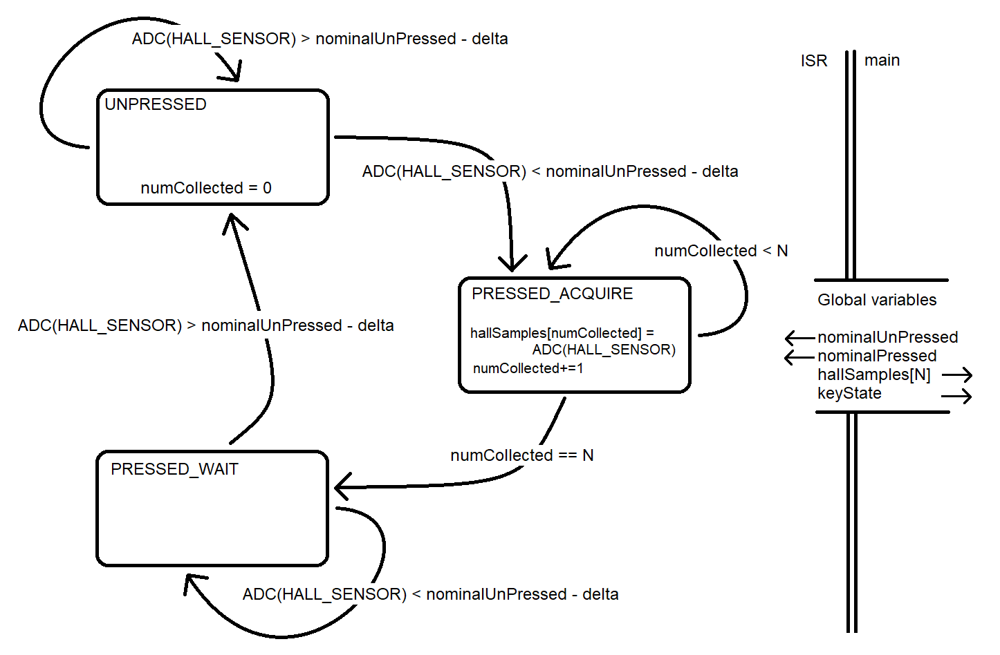
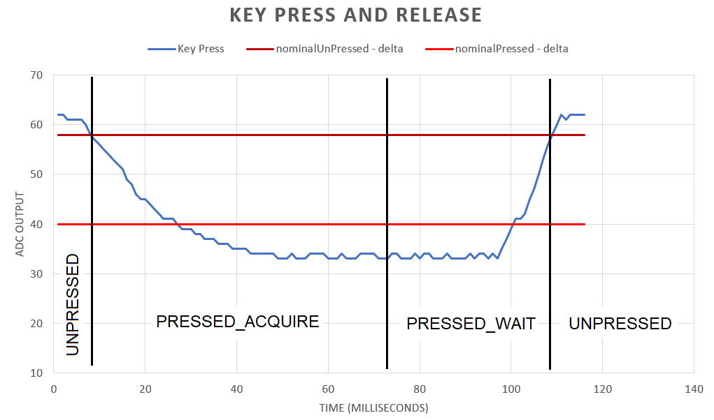
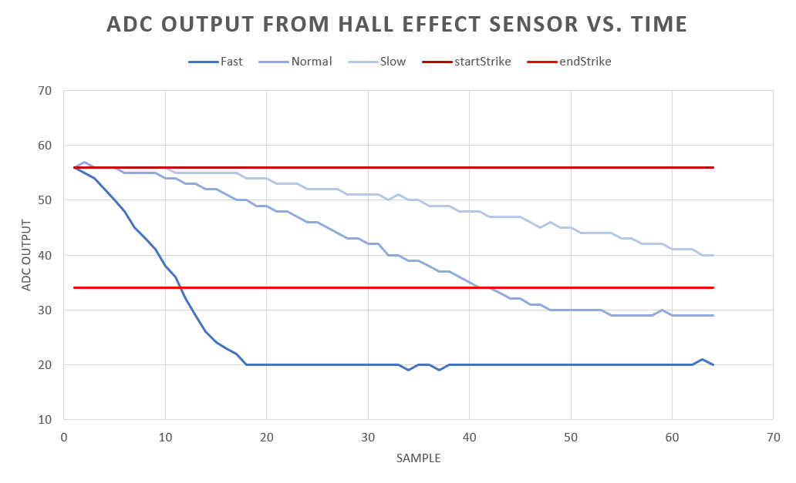

EENG 383
Lab 12 - Hall effect with MIDI
InLab 12
Some self guided
activities.
Lab 12 assignment
Create an embedded system that allows you to produce a consectutive
MIDI piano notes of a song whenever the piano key is pressed. While
the piano key is held down, sustain the note and when the piano key
is released, the note should end. When the end of the song is reached,
start over from the begining.
Software
I would advise you to write your program incrementally using the
inLab code as a starting point. The main menu is a good starting point
You program will rely on the timer 0 ISR to acquire Hall effect samples.
I have diagramed the behavior of the ISR in the following state diagram,
reference it in the following discussion.

The ISR is "called" every time that TMR0 rolls over. You should
configure this to happen every millisecond. The ISR will use
a combination of local, static and global variables to do its
work. The diagram shows four key global variables and who read
and writes their value by the direction of the arrow. The arrow
leaving "nominalUnPressed" means that main writes this value and
that the ISR reads this value.
At any given time,
the ISR will be in one of three states, UNPRESSED, PRESSSED_ACQUIRE
and PRESSED_WAIT. Regardless which state the ISR is in, just before
exiting, the ISR should start a conversion so that it has a fresh
ADC value when it next runs in one millisecond.
- UNPRESSED
- This state means that the piano key has not been pressed.
In this state the ISR reads the Hall effect output through the
ADC once every ISR call. If the Hall effect sensor value drops below
(nominalUnPressed - delta) then the ISR chages the keyState to
PRESSED_ACQUIRE and sets the number of ADC samples collected to 0.
- PRESSED_ACQUIRE
- This state means that the piano key is in the process of being
pressed. In this state each ISR invocation stores one Hall effect output
into the hallSample global array and increments the number of samples
collected. After N invocations of the ISR in this state, the hallSamples
array is full, so the ISR changes keyState to PRESSED_WAIT. The ISR
needs to exit after acquiring one sample - do not include a for-loop
in this section of the ISR that iterates N times and on each
iteration acquires a sample and wait 1ms!
- PRESSED_WAIT
- This state means that the piano key has been pressed and has yet
to be released. Evey ISR invocation in this state reads the Hall
effect sensor output and checks if it has returned to its unpressed
level. In otherwords, the Hall effect sensor output is greater or
equal to nominalUnPressed - delta.
The image below shows an excel plot of a piano key press and release
as the blue plot. The dark red horztional line is the value of
nominalUnPressed - delta. The light red horztional line is the value of
nominalPressed + delta. If the ISR were to see this key press event,
its state would change as shown. Note that it takes 64 milliseconds
to fill the hallSamples array in my program (64 samples taken at 1
millisecond intervals).

Main will be monitoring the keyState global variable. When this
variable is equal to PRESSED_WAIT, then the hallSamples array is
filled up. Let N be the length of the hallSamples array.
Main should compute the velocity of the piano key press as follows.
- Find the index of the first entry in the hallSamples array
that is less than nominalPressed + delta (light red line in
the image above). Set the key strike velocity to 128 - index.
- If no such index exists (in other words no entry in the
hallSamples array is less than nominalPRessed + delta) then
set the key strike velocity to
128 - (N + (hallSamples[N-1] - (nominalPressed + delta)))
For example, in the image below:
- "Fast" piano keypress would have a velocity of about
128 - 12 = 116
- "Medium" piano keypress would have a velocity of about
128 - 41 = 87
- "Slow" piano keypress would have a velocity of about
128 - (64 + (40 - (34))) = 58

At start-up your program should present a splash screen - this would
be a great place for some ascii art. The splash screen should also contain
connection instruction for the development board; for this assignment tell
the user there are no jumpers to install! When you press "?" at the
terminal you should be greeted with the following menu. Oh, and you
should run the terminal interface at 115,200 baud for quick bongo
response time.
-------------------------------------------------
Nominal 79 to 29
delta = 5
sampleRate = 2000us
-------------------------------------------------
?: help menu
o: k
Z: Reset processor.
z: Clear the terminal.
d/D: decrement/increment delta
c/C: calibrate unpressed/pressed hall sensor.
t: determine strike time with 64 samples, once every 2000us.
T: strike indicator and time
i: ISR values
M: enter into Midi mode.
-------------------------------------------------
- ?
Prints out the ever useful help menu. Display the current upper and
lower audio thresholds as part of the menu.
- o
Returns "k" so that you know that the terminal is in working order.
- Z
Reset the processor so that we can see that splash screen.
- z
Clear the terminal using a bunch of new lines.
- d/D
Lower case "d" decrements and upper case increments the value of delta.
Delta represents the margin below the nominalHallUnPressed, and margin
above nominalHallPressed that represent the start and end of the key press
respectively. This is a carry-over from the inLab code and gives you the
ability to calibrate your sensor should you want to.
- c/C
Lower case "c" reads the otput of the Hall effect sensor when the
key is not pressed and stores this value into nominalHallUnPressed.
Upper case "C" reads the otput of the Hall effect sensor when the
key is pressed and stores this value into nominalHallPressed.
This is a carry-over from the inLab code and allows you to compensate
for any changes in mechanical operation of your piano key since the
time you wrote your code.
- t
The "t" function asks the user to press a key and then waits until
keyState to equal PRESSED_WAIT. When it does, print out all N
entries of the hallSamples array along with the key strike velocity
then exits. The following is an example of the output.
Tap the piano key.
73 73 73 73 73 73 73 72 72 72 72 72 72 72 71 71 71 71 70 70 70 70 70 70 69 69 69 69 69 68 68 68 68 67 67 67 67 66 66 66 66 65 65 64 64 64 63 63 63 62 62 62 61 61 60 60 59 59 58 58 57 57 57 56
Strike velocity = 32
- T
The "T" function prompts the user to press the piano key or a keyboard
keyi to exit. To do this monitor the EUSART1_DataReady flag and the keyState
global variable. If keyState changes to PRESSED_WAIT, the hallSamples
array is filled with data so print the key strike velocity. When
keyState changes back to UNPRESSED, print a message that the key has been
released. Continue to print key press information until the user presses
a key on their keyboard causing EUSART1_DataReady to equal true.
The following is an example of the output.
Tap piano key and press keyboard key to exit.
Strike velocity = 115 released.
Strike velocity = 112 released.
Strike velocity = 78 released.
Strike velocity = 70 released.
- i
All this function does is print out all N values in the hallSamples array.
I added this function to my program because I though my ISR was doing
weird things and wanted to see what it was up to.
- M
This is what the assignment works toward. Actually this function is a
combination of the "M" function provided to you in the inLab code along
with the "T" function described above. This function should monitor the
keyState global and when it is equal to PRESSED_WAIT, calculate the
keyStrike velocity. Next send a
"noteOn(PLAYNOTE, song[songIndex], strikeVelocity);" command then wait
for keyState to change to UNPRESSED and then send a
"noteOn(NOTEOFF, song[songIndex], strikeVelocity);" command. After
this increment songIndex so that the next piano key press plays the
next note in your song.
Turn-in
You may work with a single partner (or alone) to complete this lab.
Submit your main.c file on Canvas using the instructions posted
there. You should take note of the Rubric that will be used to evaluate
your assignment. Please form a group before submitting using the
instructions posted on Canvas. You will demonstrate your code at the
beginning of lab.